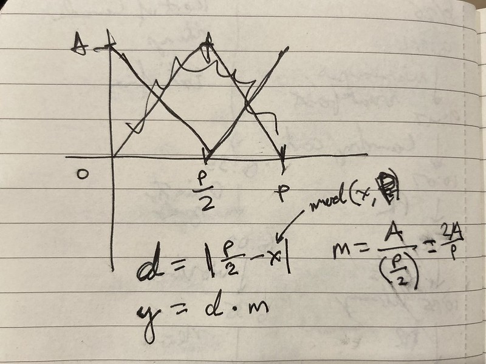

I was just thinking, oh, yeah, the triangle wave is one of the basic waves, so the equation for it is probably fairly obvious with a mod somewhere in it.
So, I tried to work it out in notebook and couldn’t get it. I did not know how to make the “V” repeat.

So, I looked it up, and it is indeed fairly busy. I saw that equation and was like, how does this relate to anything?
But it turns out that, if you start with a straight line and successively add components, though, you can see where all of the parts come from. (Except for that 4. Please let me know if you know!)
Here’s a link to the graph with the notes so you can make sense of the successive equations.
Desmos is so nice, BTW. You just write equations and get them graphed. It’s helped me think through a lot of things. When I was making Sound of the Far Future, I used it work through ways of controlling tempo and timing when events were announced. I hope it never gets crapped up by business.